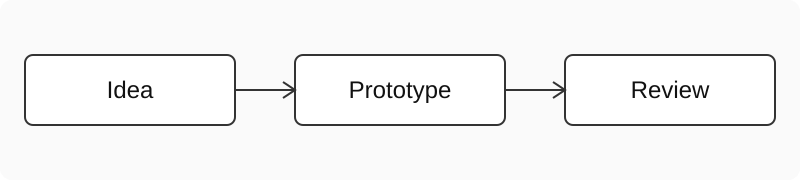

The takeaway
Write down the problem, sketch the flow, and test a small version before expanding it.
Start with the problem
Describe the people you are helping and what they need. Replace this sample with the story of your project.
Sketch the flow


Build and review
A first version can be small. Check that its navigation, content, and interaction work together. See the MDN web documentation for practical references [S1].